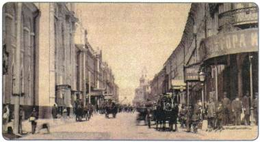
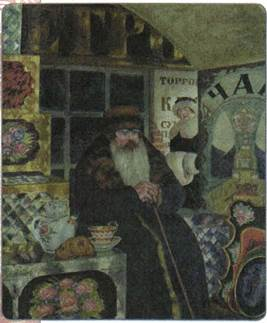
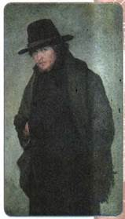
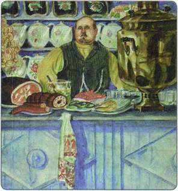
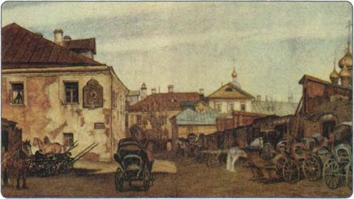
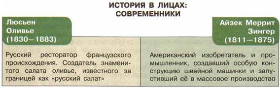

Материал для самостоятельной работы и проектной деятельности учащихся
Какие изменения в быту произошли во второй половине XIX в.? С чем это было связано?
1. Рост населения. Изменение облика городов
Отмена крепостного права и последовавшие за ней положительные сдвиги в экономике вызвали значительный рост населения Российской империи. Несмотря на высокую детскую смертность, потери в русско-турецкой войне и в период голода начала 1890-х гг., общее количество жителей страны увеличилось в период с 1860 по 1897 г. с 74 до 126 млн человек.
Россия оставалась страной крестьянской — в сельской местности проживало почти 87 % её граждан, однако городское население в течение второй половины XIX в. почти удвоилось. В 1863 г. было только три города с населением свыше 100 тыс. человек (Петербург, Москва, Одесса), в 1897 г. их было уже 14, причём число жителей Петербурга и Москвы превысило миллион человек. Таким образом, в стране активно шёл процесс урбанизации.

Вид Никольской улицы в Москве. Конец XIX в.
Менялся внешний облик городов. Не только в столицах, но и в провинциальных городах строились вокзалы, рестораны, магазины, рынки, театры и банковские здания. Ускорились темпы строительства жилых домов. Новые здания часто были многоэтажными — в четыре-пять этажей. В крупнейших городах возводились здания государственных и местных органов управления. Магазины становились всё более привычным явлением, они стали теснить традиционные торговые ряды и мелкие лавочки. Новым стало появление в городах больших рабочих окраин, где строились крупные промышленные предприятия.
Преобразовывалось и городское хозяйство. Улицы мостились булыжником и брусчаткой. В центре Москвы некоторые тротуары стали покрывать асфальтом. Улучшилось освещение улиц. В 1860-х гг. появились керосиновые фонари, которые, в свою очередь, постепенно вытеснялись газовыми. В конце 1870-х гг. в Петербурге для освещения улиц стали использовать электрические лампы, в начале 1880-х гг. они появились на улицах Москвы. В 1886 г. в Москве была построена большая электрическая станция. С этого времени электричеством стали освещаться богатые дома. Появилась и стала расширяться сеть водопроводов. Если до 1861 г. водопроводом пользовались только жители Москвы и нескольких других городов, то к концу XIX в. он действовал уже в 30 городах.
Рост предпринимательства привёл к бурному развитию средств связи. Основным средством связи была почта. Если в 1856 г. в России было отправлено 40 млн писем, то в 1888 г. — уже 355 млн. В середине века появляется телеграф. В 1852 г. существовала только одна телеграфная линия, соединявшая Москву и Петербург, а уже к 1870-м гг. телеграфной сетью были охвачены практически все губернские и уездные города. В России была построена самая протяжённая в мире телеграфная линия, которая дошла до Владивостока.
Постепенно входил в быт горожан и телефон. В 1882 г. были открыты общественные телефонные станции в Петербурге, Москве, Одессе и Риге. Начала действовать первая междугородная телефонная линия Петербург — Гатчина. В конце 1880-х гг. была налажена связь по одной из самых протяжённых в мире телефонных линий того времени Москва — Петербург.
Улучшался внутригородской транспорт. В начале 1860-х гг. была проложена конно-железная дорога — конка — в Петербурге. В 1870-х гг. она появилась в Москве и Одессе, а в 1880—1890-х гг. — почти во всех крупных городах империи. В 1892 г. по улицам Киева прошёл первый трамвай, затем трамваи появились в Казани и Нижнем Новгороде, Москве и некоторых других городах.
2. Жизнь городских «верхов»
В центре столичных и крупных губернских городов располагались большие барские особняки в стиле ампир. Здесь же, на главных улицах и в примыкающих к ним переулках, было много небольших, в основном деревянных, дворянских особняков.
К дворянским кварталам примыкали купеческие. Они тянулись, как правило, по берегу реки. Здесь, в глубине яблоневых садов, стояли крепкие двухэтажные, иногда и трёхэтажные особняки. Первый этаж обычно занимала прислуга. На втором этаже размещались нежилые парадные комнаты. По будням в них никто не входил. Шторы на окнах были спущены, мебель стояла в чехлах. Обстановка в жилых комнатах была однообразной: кровать, покрытая белым покрывалом, мраморный умывальник, шкаф для белья, письменный стол и этажерка для книг.
В купеческой части города царил старинный уклад. Пища была сытной: мясные наваристые щи, жареный гусь или утка с кашей, рыба (белуга, осетрина, навага). Пили много чаю, как правило, из тульских самоваров — с вареньем разных сортов, калачами, пирогами и пряниками.
В конце века богатые столичные купцы стали перебираться в бывшие дворянские усадьбы, строить затейливые особняки по проектам знаменитых архитекторов, щеголять породистыми рысаками. Своим внешним обликом они ничем не отличались от богатых дворян. Купеческие жёны выписывали туалеты из Парижа, ездили отдыхать на Французскую Ривьеру. Часто устраивали званые обеды. В каждом купеческом доме были свои фирменные блюда. Для обслуживания гостей приглашались повара и официанты из самых дорогих ресторанов, выступали знаменитые певцы, хоры и оркестры.
Верхушка городской интеллигенции — университетская профессура, богатые адвокаты и врачи, известные артисты и т. д., а также крупные и средние чиновники, как правило, собственных домов не имели. Они покупали или арендовали на длительный срок хорошие многокомнатные квартиры в центральных кварталах. Обстановка таких квартир практически не отличалась от богатых дворянских покоев. Но главными в домах интеллигентов были не парадные комнаты, а рабочие кабинеты и библиотеки.
Одежда жителей городов отвечала требованиям удобства и практичности. В ней, как и прежде, было много заимствований из европейской моды. С середины 1850-х гг. обязательной частью мужского гардероба стала «визитка» — разновидность длинного приталенного сюртука. Её носили с брюками из чёрной ткани в серую полоску. С 1860-х гг. в моду вошёл прямой пиджак, скрывающий фигуру. Пиджак, жилет и брюки из шерстяной ткани тёмных тонов стали классическим вариантом мужского костюма. Головными уборами были фетровая шляпа, шляпа-котелок с небольшими полями, вытеснившие цилиндр, а летом — соломенная шляпа-канотье.

Купец-сундучник. Художник Б. М. Кустодиев
Женская одежда в большей степени была подвержена капризам моды. В 1850-е гг. носили юбки на жёстком каркасе — кринолине. В 1870-х гг. российские дамы были вынуждены поменять свои туалеты: парижские модельеры предложили костюм, в котором гладкий длинный лиф сочетался с почти прямой юбкой и драпированным тюником (декоративной короткой юбкой). Чуть пониже спины, под тюником, переходящим в шлейф, помещалась небольшая подушечка — турнюр. Завершалось это сооружение пышным бантом на спине по линии талии. Однако активное вовлечение женщин в деловую и общественную жизнь привело к упрощению костюма. Он начал вбирать в себя элементы мужской моды — крахмальные воротники, манжеты, галстуки, стал тяготеть к тёмным тонам.
3. Жизнь и быт городских окраин
По окраинам губернских городов селились мелкие купцы, мещане, бедные чиновники и прочий люд. Они жили в деревянных одноэтажных домах с двором и садиком.
В уездных городах из таких строений состояли почти все улицы. Внутренняя обстановка домов была непритязательна и однообразна: кисейные занавески и горшки с геранью на окнах, иконы с теплящимися лампадками, комод, покрытый белой вязаной салфеткой, шкафчик, где за стеклом стояла незатейливая посуда.
В тех городах, где были расположены университеты, проживало большое количество молодёжи. Жители примыкающих к университету улиц сдавали студентам комнаты или квартиры. Эти районы, в подражание Парижу, получали название «латинских кварталов». Жизнь в них приспосабливалась к студенческим потребностям.
В 1870-е гг. студенты носили широкополые шляпы; на плечи был накинут шерстяной плед, восполнявший недостаток тепла пальто. В среде учащейся молодёжи появились стриженые девицы в синих очках и коротких, до середины голени, платьях тёмного цвета. В 1880-х и 1890-х гг., когда с университетскими вольностями было покончено, студентов одели в форменные сюртуки и тужурки, фуражки с синими околышами. Девушки носили строгие тёмные платья с белыми воротничками, волосы гладко зачёсывали, собирая на затылке в пучок.
В пригородах-слободах жили извозчики, мелкие ремесленники, огородники. Здесь сохранялся традиционный уклад жизни. Вставали очень рано: мужчины шли пить чай в трактир, а женщины завтракали дома. Обедали тоже рано, в двенадцать часов. Потом все оставшиеся дома ложились спать, а спустя несколько часов снова начиналась жизнь. Ужинали часов в восемь и зимой ложились спать тотчас, летом — около одиннадцати. По субботам ходили в баню. В праздники пекли пироги.

Студент. Художник Н. А. Ярошенко
Обязательным было посещение церкви в дни православных праздников. К обедне шли всей семьёй. Мужчины — в поддёвках и длиннополых сюртуках, в добротных сапогах, волосы смазаны коровьим маслом. Женщины — в косыночках на голове и в красочных шалях на плечах. Девушки щеголяли в шёлковых платьях, в шляпках с белыми пёрышками, в высоких ботинках на каблучках.
На рабочих окраинах была своя жизнь. Уровень доходов пролетариев был таков, что они, как правило, не могли подражать мещанам и буржуазии. В одежде рабочих сочетались городские и деревенские черты. Мужчины поверх деревенской рубахи носили пиджаки. Головным убором чаще всего был картуз с лаковым козырьком. На смену сапогам пришли ботинки. Женщины отдавали предпочтение ярким ситцевым платьям с узким лифом, воротничком-стойкой и широкой юбкой. Обувью служили высокие кожаные ботинки на шнуровке.
Нередко рабочие столовались у своего хозяина. Ели из общей деревянной чашки деревянными ложками. За едой следил специальный староста по столам. Он распределял по мискам мясо и давал сигнал, когда можно было начинать еду. Поглощение пищи происходило по принципу «кто смел, тот два раза съел». Рабочие редко могли позволить себе пообедать в трактире или в специальной столовой, где за 10—15 копеек можно было купить сайку или калач с горячей ветчиной или сосисками, а в посты — белугу или осетрину с хреном. В местах скопления мастерового люда сновали лоточники, торговавшие дешёвой снедью, пирогами, блинами, киселём.
В крупных городах существовали районы, где ютилась самая беспросветная беднота. В Москве, например, это была Хитровка. Здесь в многочисленных ночлежных домах, харчевнях, кабаках и притонах обитали «лишние люди», уголовники. Они были одеты в рваные кацавейки, на ногах красовались худые опорки, подвязанные верёвкой. А многим даже такая одежда была не по карману. Питались здешние обитатели кухонными отбросами, распаренными в кипятке.
4. Досуг горожан
В 1870-х гг. в обычай горожан даже среднего достатка стали входить завтраки и обеды в трактирах и ресторанах. Там же проводились деловые встречи, совершались коммерческие сделки. Особенно славилась трактирами Москва. Посетителям подавали только русские блюда: заливных поросят, щи с кашей, уху, рассольник, отбивные телячьи котлеты, осетрину, блины, гурьевскую кашу, расстегаи, подовые пироги. Трактирные порции были огромных размеров при очень умеренной цене. Женщины трактиры не посещали, так как их появление в подобных местах считалось неприличным.
Состоятельная публика по вечерам посещала рестораны. Там можно было отведать изысканные блюда французской кухни, публику развлекали цыганские хоры.

Трактирщик. Художник Б. М. Кустодиев
Найдите в художественном произведении одного из писателей второй половины XIX в. (И. А. Гончарова, Н. С. Лескова, М. Е. Салтыкова-Щедрина) описание трактира того времени.
Прочно в досуг горожан вошёл театр, особенно часто горожане посещали театры зимними вечерами. Знать и богатые купцы абонировали в театрах постоянные ложи. Дамы одевались в театр очень нарядно, сопровождавшие их кавалеры были во фраках. На балконе собиралась публика попроще, а галёрку обычно занимали студенты, которые громкими криками и бурными аплодисментами поддерживали любимых артистов. В Москве в Большом театре устраивались многолюдные маскарады. Популярностью пользовались также скачки и бега.
У простого люда были свои развлечения. Особенно весёлыми были неделя на Масленицу и пасхальные дни. На свободных городских пространствах строились временные дощатые балаганы, тут же раскидывались палатки, торговавшие пряниками, орехами, блинами и пирогами, сооружались карусели, гремели духовые оркестры, наигрывали шарманщики. Не были забыты старинные игры: лапта, бабки и хороводы. На фабричных окраинах устраивались кулачные бои. Обычно сходились «стенка на стенку» враждующие между собой рабочие двух фабрик. В некоторых городах устраивались петушиные бои.
5. Изменения в деревенской жизни
Несмотря на крупные перемены, происходившие в русской деревне, быт крестьян менялся крайне медленно. Они, как в прежние времена, жили в деревянных избах с русской печью. Носили простую одежду: поддёвки, чуйки, армяки, длиннополые сюртуки, полушубки и тулупы. По-прежнему главной обувью были лапти, а у более зажиточных крестьян появились сапоги.
Тем не менее усиливающиеся контакты с городом постепенно меняли деревенскую жизнь. Ушла в прошлое курная изба, топившаяся печью без дымохода. Для освещения, наряду с лучиной, стали применять свечи и керосиновые лампы. В повседневный быт всё шире внедрялись промышленные товары. Стали использовать глиняную посуду вместо деревянной, покупали ситец и шёлк на рубахи и платья, пили чай с сахаром, ели больше мяса. Крестьянские дома своим внешним видом стали походить на дома городских окраин. В зажиточных семьях появились часы, книги, гармонь. Всё большее значение стала приобретать мода. По праздникам парни надевали алые атласные рубахи и пиджаки, модные пальто; лапти и валенки меняли на сапоги и галоши. Женщины вместо сарафанов и домотканых рубах одевались в шерстяные или шёлковые платья.

Извозчичий дом. Конец XIX в. Акварель В. Календы
И хотя тяжёлый земледельческий труд отнимал у крестьян очень много времени, молодёжь летними вечерами собиралась за околицей, а зимой — в избе. Пели песни, задорные частушки, водили хороводы. Под Рождество и Крещение девушки гадали, на Крещение устраивали колядование с ряжеными. Осенью игрались весёлые свадьбы. В каждой местности были свои свадебные ритуалы и традиции. Отмечали все престольные праздники, крестили младенцев и отпевали умерших. Православная вера, традиции и обычаи пронизывали повседневную жизнь русских крестьян.

ПОДВЕДЁМ ИТОГИ
Под влиянием перемен в экономике и общественном устройстве в пореформенной России значительно изменился образ жизни населения. Активно шли урбанизация, внедрение в жизнь различных технических достижений. В быту переплетались вековые традиции и новшества индустриального общества.
Вопросы и задания для работы с текстом параграфа
1. В чём заключались особенности развития городской застройки во второй половине XIX в.? Как эти особенности повлияли на плотность населения в городах? 2. Что нового появилось в жизни городских «верхов»? 3. Каковы были отличительные черты быта жителей городских окраин? Какие традиционные элементы быта сохранялись у них? 4. Какие изменения происходили в жизни крестьян? Как вы думаете, почему крестьянская жизнь менялась гораздо медленнее, нежели городская? 5. Как развитие промышленности повлияло на деревенский быт? Назовите промышленные изделия, производство которых вызывало эти изменения.
Думаем, сравниваем, размышляем
1. Чем досуг обитателей городских окраин во второй половине XIX в. отличался от досуга «верхов»? 2. Изучите материалы о быте помещиков во второй половине XIX в., привлекая дополнительную информацию. 3. Используя текст учебника, расскажите об основных изменениях, имевших место на протяжении XIX столетия в быту и нравах жителей России. 4. Разделившись на группы, найдите в Интернете фотографии улиц и домов разных городов вашего региона второй половины XIX в. и сделайте вместе с одноклассниками на их основе презентацию-экскурсию.
Запоминаем новые слова
Автономия — самоуправление, право самостоятельного решения внутренних вопросов какой-либо частью государства, отдельным учреждением.
Акциз — косвенный налог, наценка, устанавливаемая государством на товары массового потребления.
Винная монополия — исключительное право государства на производство и продажу спиртных напитков.
Инвестиции — долгосрочные вложения капитала в экономику.
Индустриальное общество — общество, в котором завершён процесс создания крупной, технически развитой промышленности, преобладающей над сельским хозяйством.
Меценатство — покровительство какому-либо делу, науке, культуре.
Мировоззрение — система взглядов, воззрений на природу и общество. Модернизация — процесс перехода от традиционного общества к обществу индустриальному.
ПОВТОРЯЕМ И ДЕЛАЕМ ВЫВОДЫ
1. Какие перемены в экономике и социальном строе России произошли в 1880— 1890-е гг.?
2. Охарактеризуйте внутреннюю политику Александра III. Каковы были особенности его национальной и религиозной политики?
3. Перечислите главные события внешней политики России в 1880—1890-е гг.
4. Какие достижения в развитии науки и образования во второй половине XIX в. вы считаете наиболее значительными?
5. Какие направления господствовали в художественной культуре второй половины XIX в.?
6. Используя карту, расскажите о том, как изменялась территория Российской империи на протяжении XIX столетия.